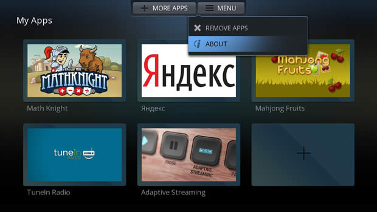
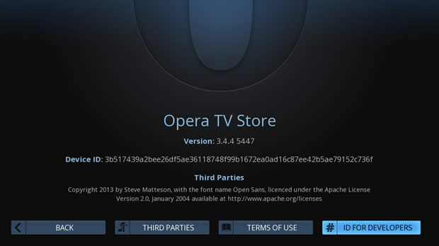
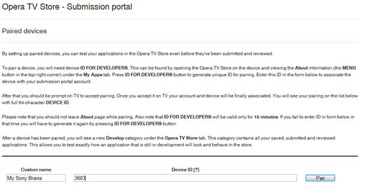
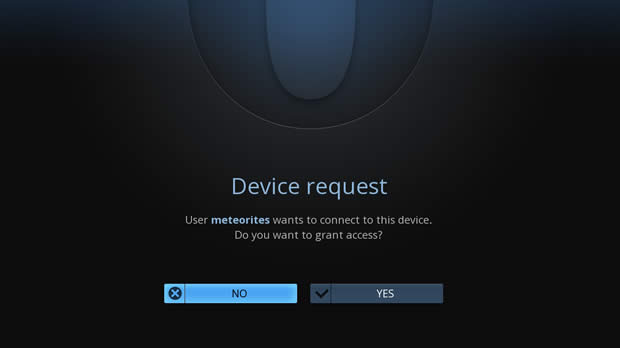
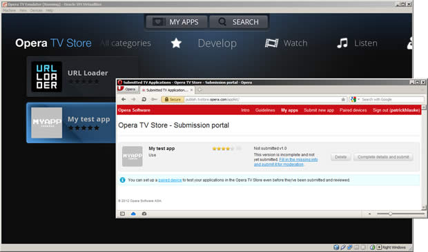
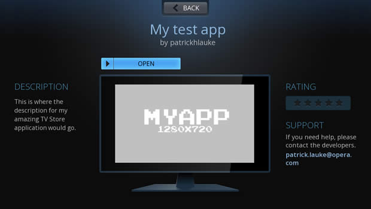

Testing your app inside the Opera TV Store
Introduction
Before submitting an application to the Opera TV Store, developers need to ensure that it works as expected, to avoid a lengthy review process and potential delays.
Although the Opera TV Store uses the same core engine that is also found in the generic Opera Device SDK – used by many TV and set-top-box manufacturers as the basis for their own TV browser implementations – and in the Opera browser on desktop and mobile devices, there are still notable differences. The Opera TV Store provides additional functionality (such as its functional key handling) and specific restrictions. For this reason, it is advisable to test your applications inside the actual Opera TV Store environment itself.
Note that you can access a list of TVs that the Opera TV store is already available on, to find a suitable device for testing TV store apps.
Normally, the Opera TV Store does not provide end users with any browser-like interface elements – it only shows the user's chosen applications and the catalogue of already approved and published applications. However, as a developer you can set up your particular TV, set-top-box or Opera TV Emulator to be "paired" with your Opera TV Store Submission portal account. This gives you access to a simple URL entry application, making it possible to view and test any arbitrary web address, and the ability to launch any apps already saved in your account, even before they've been submitted for final review.
To pair a device, you will need a device ID FOR DEVELOPERS. This can be found by opening the Opera TV Store on the device and viewing the About information (found under the MENU button at the top of the interface) under the My Apps tab. If you are using the Opera TV Emulator, simply navigate to Opera's demonstration store at https://demo.tvstore.opera.com.

The About screen details the version number of the Opera TV Store, as well as a 64-character Device ID.

Press the ID FOR DEVELOPERS button at the bottom right to generate a unique ID for pairing.
Using your regular desktop browser, log in to your Opera TV Store Submission portal account and go to your Paired devices page. Enter a friendly Custom name and the Pairing ID (labelled Device ID on the form), and your device will now be paired with your account.

After that you should be prompted on your TV to accept pairing.

Once you accept the pairing request, your account and device will be associated. You will see your device listed on the Paired devices page, with its full 64-character DEVICE ID.
Please note that you should not leave the About page while pairing your device. Also note that the ID FOR DEVELOPERS will be valid only for 15 minutes. If you fail to enter the ID in the Paired devices page in that time, you will have to generate a new one by pressing the ID FOR DEVELOPERS button again.
After a device has been paired, you will see a new Develop category under the Opera TV Store tab. This category contains all your saved, submitted and reviewed applications. This allows you to test exactly how an application that is still in development will look and behave in the store.
If you are using the Opera TV Emulator, you can simply use your mouse to select the Device ID shown on screen, copy it to your clipboard, and paste it into the relevant form field in your desktop browsed.
If you're on a Mac, remember that the Opera TV Emulator is running Linux at its core, so you'll need to use CTRL+C, rather than ⌘/CMD+C, to copy the text to the clipboard.

From here, you can launch the URL Loader – a simple utility to point the Opera TV Store client to any arbitrary web address where your in-development app is located. Additionally, if you already saved or submitted applications in the My Apps section of the Opera TV Store Submission portal, these will also be shown in this category, ready to be tested.

The advantage of saving an application and starting it from the Develop category, rather than simply loading its address via the URL Loader, is that it allows you to check how the icon, screenshot and description will look within the context of the Opera TV Store. Additionally, when a saved app is launched, a valid UID will be passed along as a GET parameter, just as with fully published applications.
The UID is both device and application specific (it's an encrypted combination of the Device ID and the identifier that's been assigned to the app in the Opera TV Store's systems), meaning that it can be used to identify return visits to an application from the same device, but it can't be used to track users across different devices, or across different applications on the same device.
Patrick H. Lauke

Web Evangelist in the Developer Relations Team at Opera Software ASA.
Product manager for Opera Dragonfly – Opera's built-in web developer tools.
http://www.opera.com/dragonfly/
This article is licensed under a Creative Commons Attribution 3.0 Unported license.
Comments
-
I like this
No new comments accepted.Gian pamungkas
Friday, February 1, 2013